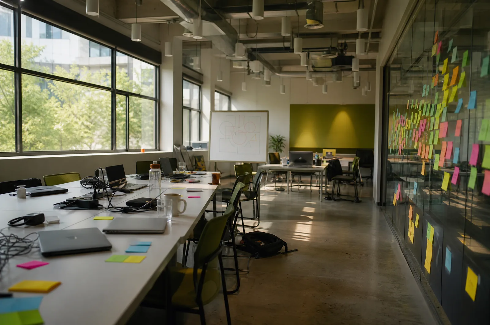

01

האקתון יומי / שבועי
יום אחד או שבוע אחד. קבוצות של 3–5, בעיה מוגדרת מראש, ומועד הצגה קבוע. אנחנו מביאים את הציוד, את המנטורים ואת המסגרת; המשתתפים מביאים את הפתרון.
מה זה נותן לך קבוצה שלמדה לעבוד ביחד תחת לוח זמנים, ותוצר שעובד בסוף היום, לא מצגת על תוצר.
מתאים ל חטיבות ותיכונים · מכינות · צוותי פיתוח בארגונים